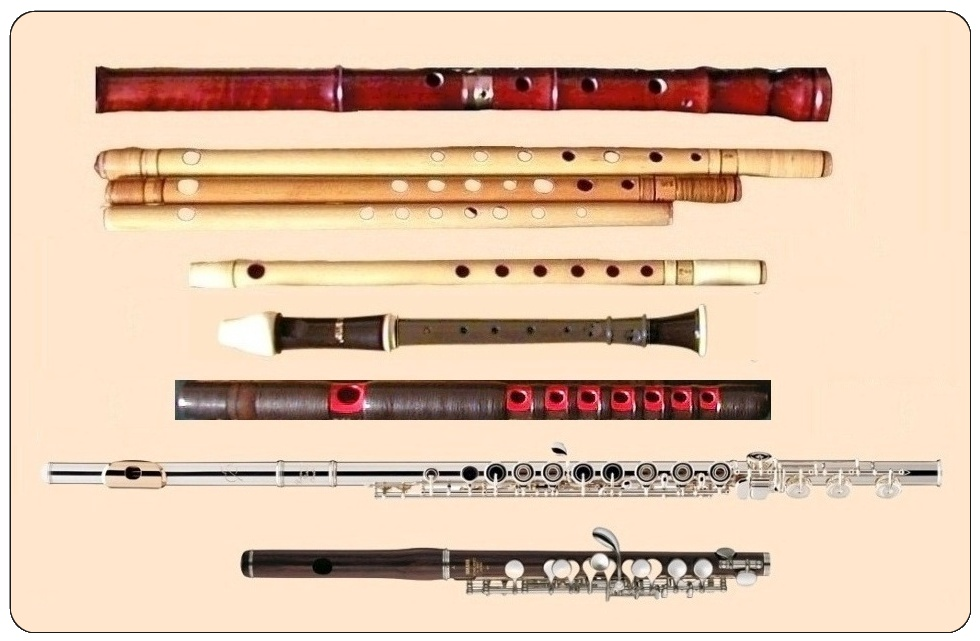

PRESENTACIÓN
¡Hola! No importa si no conoces nada sobre el maravilloso mundo de las flautas traveseras.
En esta página podrás encontrar todo lo relacionado con ello, ya sean los diferentes materiales con los que se construyen, los diferentes intérpretes de renombre que hay, partituras, libros, CDs y un largo etcétera.